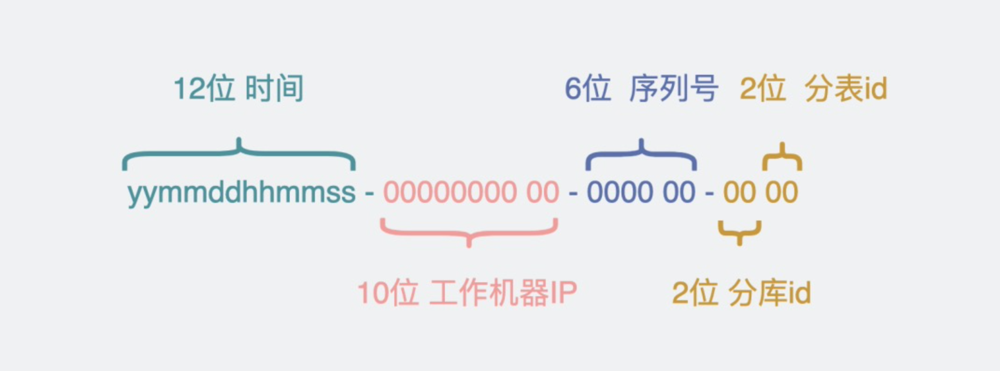

mysql主键设置的三种方式
mysql 主键三种方式
自增主键auto_increment自增
- 大部分情况下我们都是建议使用自增主键
- 如果需要用到分库分表则不太建议使用自增主键
雪花算法

- 第0位是不使用的
- 雪花算法41位是时间戳，精度是毫秒，这个大小大概能表示个69年左右。
- 接下来10位是指产生这些雪花算法的工作机器id，这样就可以每个机器产生的id具有相应的标识
- 在接下来就是12位的序列号，这些工作机器里面生成的递增数字
可以看出在同一毫秒内，能产生的id数量就是2的10次方*2的12次方，大概400w个肯定是够用的。
细心的兄弟们肯定也发现了，雪花算法它算出的数字动不动就比上次的数字多个几百几万的，也就是它生成的id是趋势递增的，并不是严格+1自增的，也就是说它并不太适合于根据范围来分表的场景。这是个非常疼的问题。
还有个小问题是，那10位工作机器id，我每次扩容一个工作机器，这个机器怎么知道自己的id是多少呢？是不是得从某个地方读过来。
那有没有一种生成id生成方案，既能让分库分表能做到很好的支持动态扩容，又能像雪花算法那样并不依赖redis这样的第三方服务。
uuid形式

适合分库分表的uuid算法
我们可以参考雪花算法的实现，设计成下面这样。注意下面的每一位，都是十进制，而不是二进制。
开头的12位依然是时间，但并不是时间戳，雪花算法的时间戳精确到毫秒，我们用不上这么细，我们改为yyMMddHHmmss，注意开头的yy是两位，也就是这个方案能保证到2099年之前，id都不会重复，能用到重复，那也是真·百年企业。同样由于最前面是时间，随着时间流逝，也能保证id趋势递增。
接下来的10位，用十进制的方式表示工作机器的ip，就可以把12位的ip转为10位的数字，它可以保证全局唯一，只要服务起来了，也就知道自己的ip是多少了，不需要像雪花算法那样从别的地方去读取worker id了，又是一个小细节。
在接下来的6位，就用于生成序列号，它能支持每秒钟生成100w个id。
最后的4位，也是这个id算法最妙的部分。它前2位代表分库id，后2位代表分表id。也就是支持一共100*100=1w张分表。
参考小白debug link
本文作者 : fabio
原文链接 : https://zzzfwww.github.io/passages/mysql-primary-key/
版权声明 : 本博客所有文章除特别声明外，均采用 CC BY-NC-SA 4.0 许可协议。转载请注明出处！